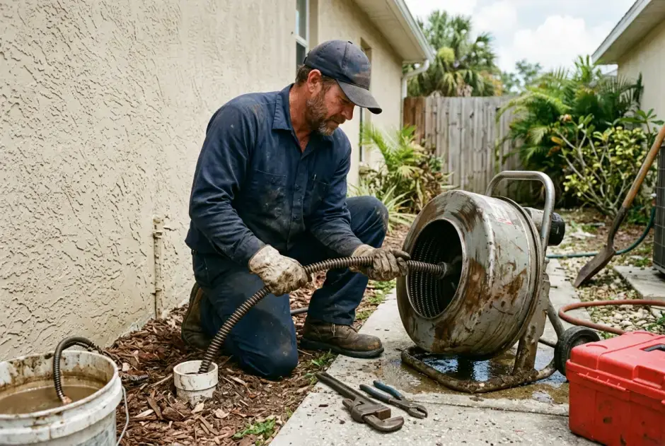
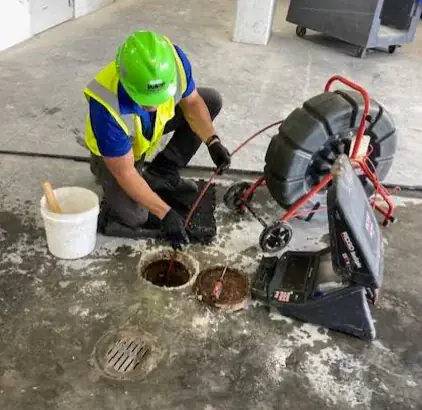
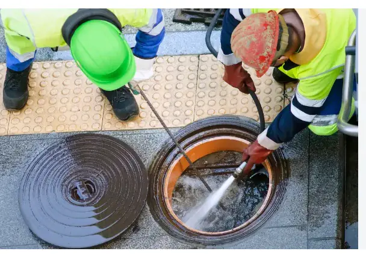

Single Fixtures

Drain Snaking & Cabling
For isolated clogs in single bathroom sinks, showers, laundry drains, and kitchen disposals.
See Drain Snaking Details →When waste stops flowing from your home to the municipal main or septic system, quick action prevents catastrophic contamination. We conduct high-definition camera scoping first to locate tree roots or heavy sludge, quote the cost upfront, and clear your main sewer lateral.

A main sewer stoppage differs fundamentally from an isolated fixture clog. Because all household branch lines feed into this single discharge pipe, a main blockage affects your entire home.
If flushing a hallway toilet causes wastewater to bubble up into your master bathroom shower or bathtub, the obstruction is located in the main discharge line downstream.
Trapped air pockets forced back through vent stacks produce distinct gurgling or sucking noises from toilet bowls when the dishwasher or laundry machine empties.
Wastewater standing in lateral pipes releases methane and hydrogen sulfide gases that escape through dry seals, creating pungent odors around floor cleanouts.
We never run cables blindly into pipes. When performing professional sewer cleaning in Naples, FL, our technicians insert a specialized camera into the exterior cleanout to inspect pipe conditions first.
When Mechanical Cabling is Used: Heavy motorized steel cables equipped with expanding C-cutter or saw-tooth heads are fed through the cleanout. These blades bore through dense masses, severing invasive ficus and palm roots and extracting packed toilet paper.
When Hydro Jetting is Recommended: If the pipe is heavily choked with solidified grease, silt, or scale, mechanical cables only poke a hole through the center. Hydro jetting propels high-pressure water (up to 4,000 PSI) backwards through the pipe, scrubbing the internal diameter completely clean.
Clearing vs. Pipe Repair: A critical distinction we uphold for every Naples homeowner: clearing removes the clog, but it does not repair a cracked, crushed, or offset pipe joint. If our camera reveals structural failure, we present clear video evidence so you understand your permanent options.

We provide transparent written quotes after camera diagnosis. Here are the realistic factors that shape service scope:
Homes with accessible ground-level cleanouts allow immediate equipment entry. Properties requiring toilet pulling or roof vent access require additional labor.
Standard laterals run 40 to 80 feet to the city street connection. Extended runs on large estates require extended industrial cable reels and specialized setups.
Fine hairline root systems clear quickly with standard cutter heads. Massive woody taproots may necessitate multi-stage cutting heads followed by hydro scouring.
Modern PVC allows aggressive cleaning. Older cast iron or clay pipes require calibrated speed and lower pressures to prevent joint disturbance.
Do not wait for wastewater to flood your living areas. If your home has mature palms or ficus landscaping along the sewer line, schedule a preventative video camera inspection every 18 to 24 months. Avoid flushing "flushable" wet wipes, feminine hygiene products, or pouring cooking oils down garbage disposals.

For isolated clogs in single bathroom sinks, showers, laundry drains, and kitchen disposals.
See Drain Snaking Details →
Total 360-degree high-pressure water scouring for grease-clogged laterals and heavy scale removal.
See Hydro Jetting Details →Your private sewer lateral is the underground pipeline connecting your home's indoor plumbing fixtures to the Collier County or City of Naples municipal sewer main under the street. Homeowners are legally responsible for maintenance from the house foundation to the municipal property line.
In Southwest Florida slab-on-grade architecture, drain lines run directly beneath concrete foundation slabs. In homes built prior to 1975, these lines are typically cast iron. Over decades, acidic sewer gases corrode the pipe crown and bottom channel, creating rough rust ridges that snag waste.
Usually located 2 to 5 feet outside your foundation wall in landscaping, this threaded access point allows technicians to direct high-torque cables both backward toward your house fixtures and forward toward the street main without dragging dirty equipment inside your living room.
Running 40 to 100 feet across your front lawn, this 4" or 6" horizontal line traverses coastal sandy soil. Heavy subtropical rainfall causes soil settling, leading to pipe bellies (low dips that hold standing water) where toilet paper and grease settle into solid dams.
Naples landscaping features magnificent tropical flora, including weeping ficus hedges, royal palms, and sea grapes. During our dry winter months (November through April), groundwater tables drop, and thirsty root capillaries detect nutrient-rich water vapor escaping through microscopic pipe seams and rubber Fernco couplings.
A single hair-thin root fiber entering a joint expands within months into an impenetrable bird-nest web. As bathroom waste passes, paper fibers catch on the root web until the entire 4-inch pipe is completely plugged.
Cuts through the dense core of the root mass to immediately re-establish drainage flow. Ideal for immediate emergency relief.
High-pressure water jets rotate at 2,000 RPM, shaving root whiskers flush against the pipe inner circumference for maximum longevity.
Having your exterior sewer cleanout uncovered can save 20 to 30 minutes during an active backup emergency. Here is where cleanouts are typically positioned in Naples residences:
Cannot find your cleanout? Do not worry—our service vans carry electronic locators and magnetic pipe finders to trace buried cleanout caps quickly without damaging turf.
The primary indicators include gurgling toilets when you run sink water, wastewater surfacing in bathtub or shower drains, a foul sewer odor in bathrooms or yards, and multiple plumbing fixtures draining slowly at the same time.
Subtropical landscaping in Naples, such as ficus hedges and palm trees, seeks moisture and nutrients. Roots enter tiny joint fissures or microscopic cracks in sewer pipes, expanding over time into dense root balls that trap toilet paper and solid waste.
No. Sewer cleaning removes obstructions such as roots, grease, and debris so wastewater can flow. However, if our camera inspection detects a collapsed, crushed, or bellied pipe, the physical line requires structural repair or replacement, which we will clearly explain with video evidence.
Mechanical cabling uses heavy spinning blades to cut through and retrieve root masses and solid blockages. Hydro jetting uses high-pressure water to scour residual grease, sludge, and fine root filaments completely off the pipe walls.
Cost is influenced by cleanout accessibility, the distance from the cleanout to the obstruction, whether roots have severely penetrated the line, and if hydro jetting is required following mechanical cabling. We provide a firm written estimate following our camera inspection.
Yes, we handle commercial sewer lines and grease lateral lines for Naples restaurants, retail properties, and offices with heavy-duty commercial cabling and water jetting equipment.